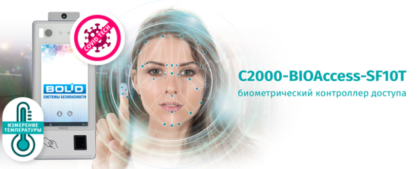

<div class="page-wrapper">
    <section class="news-page section">
        <div class="container">
            <div class="breadcrumb-wrapper">
                <nav aria-label="breadcrumb" class="breadcrumb">
                    <a href="#">Главная</a>
                    <a href="#">О компании</a>
                    <a href="#">Новости</a>
                    <span aria-current="page">Начало поставок биометрического контроллера доступа
                        «С2000-BIOAccess-SF10T»</span>
                </nav>
            </div>
            <h1 class="news-page__heading">Начало поставок биометрического контроллера доступа «С2000-BIOAccess-SF10T»
            </h1>
            <div class="news-page__inner">
                <div class="news-page__content">
                    
                    <p>С2000-BIOAccess-SF10T обеспечивает скоростное распознавание лиц:</p>
                    <br>
                    <ul>
                        <li>на расстоянии до 3 м</li>
                        <li>при отклонении головы до 30&deg; в любом направлении</li>
                        <li>в очках, головных уборах и защитных масках</li>
                    </ul>
                    <br>
                    <p>Контроллер оснащен функцией определения &laquo;живого&raquo; человека (liveness detection),
                        обладает
                        повышенной защитой от подмены идентификатора, например использование фотографий и трехмерных
                        масок
                        (Anti-spoofing).</p>
                    <br>
                    <p>COVID-Tech:</p>
                    <br>
                    <ol>
                        <li>Функция детектирования ношения защитной маски и автоматического отказа в предоставлении
                            доступа
                            в случае отсутствия или неправильного ношения маски</li>
                        <li>Функция измерения температуры тела и автоматического отказа в предоставлении доступа лицам с
                            повышенной температурой тела
                        </li>
                    </ol>
                    <br>
                    <br>
                    <div class="table-wrapper">
                        <table>
                            <thead>
                                <tr>
                                    <th>Название</th>
                                    <th>Характеристика 1</th>
                                    <th>Хар-ка 2</th>
                                    <th>Характеристика 3</th>
                                </tr>
                            </thead>
                            <tbody>
                                <tr>
                                    <td>С2000-BIOAccess-SF10T</td>
                                    <td>10 000</td>
                                    <td>4</td>
                                    <td>Amet minim mollit</td>
                                </tr>
                                <tr>
                                    <td>Орион Видео Лайт</td>
                                    <td>100 000</td>
                                    <td>6</td>
                                    <td>Velit officia consequat duis ...</td>
                                </tr>
                                <tr>
                                    <td>Орион Видео Лайт Орион Видео Л...</td>
                                    <td>11 000</td>
                                    <td>12</td>
                                    <td>Exercitation</td>
                                </tr>
                                <tr>
                                    <td>С2000-BIOAccess-SF10T</td>
                                    <td>100 000</td>
                                    <td>8</td>
                                    <td>Veniam consequat </td>
                                </tr>
                            </tbody>
                        </table>
                    </div>
                    <br>
                    <p>Объем памяти контроллера:</p>
                    <br>
                    <ul>
                        <li>10 000 шаблонов лиц</li>
                        <li>10 000 шаблонов отпечатков пальцев</li>
                        <li>10 000 карт</li>
                        <li>100 000 событий</li>
                    </ul>
                    <br>
                    <p>Предназначен для совместной работы с АРМ «Орион Про» для организации системы контроля и
                        управления
                        доступом по биометрическим идентификаторам – лицам и отпечаткам пальцев.</p>
                    <div class="news-item__info">
                        <p class="news-item__date">16.05.2022</p>
                        <p class="news-item__views">
                            <svg>
                                <use href="#eye"></use>
                            </svg>
                            <span>3241</span>
                        </p>
                    </div>
                </div>

                <a class="news-page__back" href="#">
                    <svg>
                        <use href="#arrow"></use>
                    </svg>
                    <span>Ко всем новостям</span>
                </a>
            </div>
        </div>
    </section>
</div>